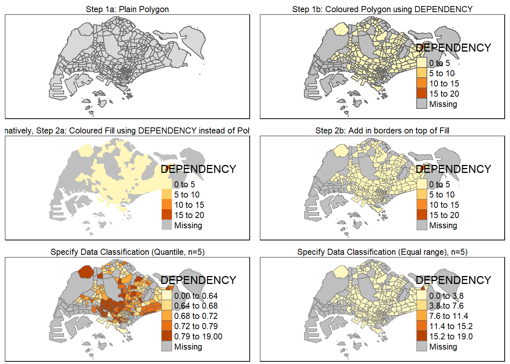
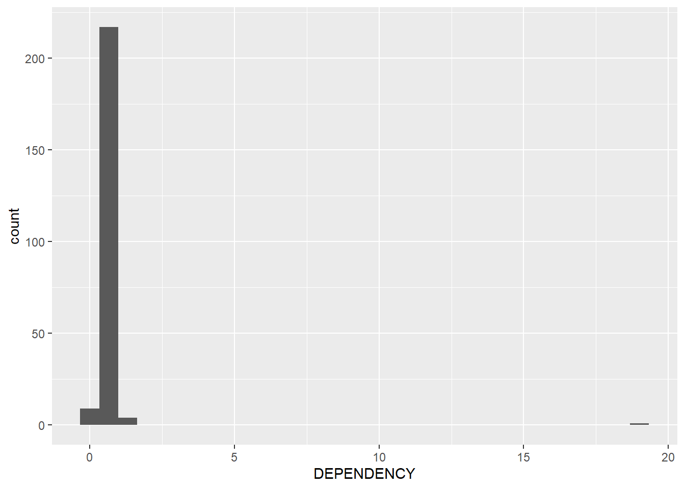

pacman::p_load(sf, tidyverse, tmap)Exercise 02 ‘Thematic Mapping and GeoVisualisation with R’
(Copied from Exercise) Overview:
In general, thematic mapping involves the use of map symbols to visualize selected properties of geographic features that are not naturally visible, such as population, temperature, crime rate, and property prices, just to mention a few of them.
Geovisualisation, on the other hand, works by providing graphical ideation to render a place, a phenomenon or a process visible, enabling human’s most powerful information-processing abilities – those of spatial cognition associated with our eye–brain vision system – to be directly brought to bear.
In this chapter, you will learn how to plot functional and truthful choropleth maps by using an R package called tmap package.
1 Import packages
2 Import data
(Copied from Exercise) Two data set will be used to create the choropleth map. They are:
Master Plan 2014 Subzone Boundary (Web) (i.e.
MP14_SUBZONE_WEB_PL) in ESRI shapefile format. It can be downloaded at data.gov.sg This is a geospatial data. It consists of the geographical boundary of Singapore at the planning subzone level. The data is based on URA Master Plan 2014.Singapore Residents by Planning Area / Subzone, Age Group, Sex and Type of Dwelling, June 2011-2020 in csv format (i.e.
respopagesextod2011to2020.csv). This is an aspatial data fie. It can be downloaded at Department of Statistics, Singapore Although it does not contain any coordinates values, but it’s PA and SZ fields can be used as unique identifiers to geocode toMP14_SUBZONE_WEB_PLshapefile.
mpsz <- st_read(
dsn="data/geospatial/MasterPlan2014SubzoneBoundaryWebSHP",
layer="MP14_SUBZONE_WEB_PL")
# mpsz
popdata <- read_csv("data/aspatial/respopagesextod2011to2020/respopagesextod2011to2020.csv", show_col_types = FALSE)
# popdata
# colnames(popdata)3 Data Preparation
Create Data Table for Year 2020
We want to plot a choropleth map using year 2020 values, by joining the population table with the masterplan subzone object.
Aim: Create a data table for year 2020 values, containing columns as shown:
| PA | SZ | YOUNG | ECONOMY ACTIVE | AGED | TOTAL | DEPENDENCY |
Therefore, we will derive values for:
- YOUNG: age group 0 to 4 until age group 20 to 24,
- ECONOMY ACTIVE: age group 25-29 until age group 60-64,
- AGED: age group 65 and above,
- TOTAL: all age group, and
- DEPENDENCY: the ratio between young and aged against economy active group
popdata2020 <- popdata %>%
filter(Time==2020) %>% # select rows where Time = 2020
group_by(PA, SZ, AG) %>% # group by PA, SZ, AG
summarise(`POP` = sum(`Pop`)) %>% # sum up the population within each group
ungroup() %>% # ungroup table (which allows for further calculations
# on individual rows)
pivot_wider( # create new columns using values from AG as names
names_from=AG, # and values from POP as values
values_from=POP)
colnames(popdata2020) [1] "PA" "SZ" "0_to_4" "10_to_14" "15_to_19"
[6] "20_to_24" "25_to_29" "30_to_34" "35_to_39" "40_to_44"
[11] "45_to_49" "50_to_54" "55_to_59" "5_to_9" "60_to_64"
[16] "65_to_69" "70_to_74" "75_to_79" "80_to_84" "85_to_89"
[21] "90_and_over"popdata2020 <- popdata2020 %>%
mutate(YOUNG = rowSums(.[3:6]) + rowSums(.[14])) %>% # add YOUNG = sum across the row where index = [3:6] and [15]
mutate(`ECONOMY ACTIVE` = rowSums(.[7:13]) + rowSums(.[15])) %>% # add ECONOMY ACTIVE
mutate(`AGED`= rowSums(.[16:21])) %>% # add AGED
mutate(`TOTAL`= rowSums(.[3:21])) %>% # add TOTAL
mutate(`DEPENDENCY` = (`YOUNG` + `AGED`)/`ECONOMY ACTIVE`) %>% # add DEPENDENCY
select(`PA`, `SZ`, `YOUNG`, `ECONOMY ACTIVE`, `AGED`, `TOTAL`, `DEPENDENCY`)
colnames(popdata2020)[1] "PA" "SZ" "YOUNG" "ECONOMY ACTIVE"
[5] "AGED" "TOTAL" "DEPENDENCY" Join attribute and geospatial data (geolocational join)
# convert PA and SZ variable data to upper cases to match SUBZONE_N and PLN_AREA_N of mspz
popdata2020 <- popdata2020 %>%
mutate_at(.vars = vars(PA, SZ), # mutate at variables PA , SZ
.funs = list(toupper)) %>% # apply function list(toupper)
filter(`ECONOMY ACTIVE` > 0)
# left join by SUBZONE_N = SZ
mpsz_pop2020 <- left_join(mpsz, popdata2020,
by = c("SUBZONE_N" = "SZ"))Export/Write Data frame as RDS object
# Write to a R Data Serialization(RDS) file, which is useful for storing state of objects between R sessions
write_rds(mpsz_pop2020, "data/rds/mpszpop2020.rds")4 Choropleth Mapping Geospatial Data Using tmap
Overview Examples
Quick Method of Visualising using qtm()
# set tmap mode to "plot" , alternatively use view for interactive plot
tmap_mode("plot")
qtm(mpsz_pop2020,
fill = "DEPENDENCY")
# mpsz_pop2020Adjusting layouts, borders, and adding furnitures (e.g. compass, scale)
tm_shape(mpsz_pop2020)+
tm_fill("DEPENDENCY",
style = "quantile",
palette = "Blues",
title = "Dependency ratio") +
tm_layout(main.title = "Distribution of Dependency Ratio by planning subzone",
main.title.position = "center",
main.title.size = 1.2,
legend.height = 0.45,
legend.width = 0.35,
frame = TRUE) +
tm_borders(alpha = 0.5) +
tm_compass(type="8star", size = 2) +
tm_scale_bar() +
tm_grid(alpha =0.2) +
tm_credits("Source: Planning Sub-zone boundary from Urban Redevelopment Authorithy (URA)\n and Population data from Department of Statistics DOS",
position = c("left", "bottom"))
Basic Steps to create a Choropleth Map. Using tm_polygons() vs tm_fill() + tm_borders()
# st_make_valid(mpsz_pop2020)
# tmap_options(check.and.fix = TRUE)
# tmap_mode("plot")
# Step 1a: Plain Polygon
tm1 <- tm_shape(mpsz_pop2020) + tm_polygons() + tm_layout(
main.title = "Step 1a: Plain Polygon",
main.title.position = "center",
main.title.size = 0.7)
# Step 1b: Coloured Polygon using DEPENDENCY
tm2 <- tm_shape(mpsz_pop2020)+ tm_polygons("DEPENDENCY") + tm_layout(
main.title = "Step 1b: Coloured Polygon using DEPENDENCY",
main.title.position = "center",
main.title.size = 0.7,
legend.width = 5.0)
# Alternatively, Step 2a: Coloured Fill using DEPENDENCY instead of Polygon
tm3 <- tm_shape(mpsz_pop2020)+ tm_fill("DEPENDENCY") + tm_layout(
main.title = "Alternatively, Step 2a: Coloured Fill using DEPENDENCY instead of Polygon",
main.title.position = "center",
main.title.size = 0.7)
# Step 2b: Add in borders on top of Fill
tm4 <- tm_shape(mpsz_pop2020) + tm_fill("DEPENDENCY") + tm_borders(lwd = 0.1, alpha = 1) + tm_layout(
main.title = "Step 2b: Add in borders on top of Fill",
main.title.position = "center",
main.title.size = 0.7)
# Specify Data Classification (Quantile, n=5)
tm5 <- tm_shape(mpsz_pop2020) + tm_fill("DEPENDENCY", n = 5, style = "quantile") + tm_borders(alpha = 0.5) + tm_layout(
main.title = "Specify Data Classification (Quantile, n=5)",
main.title.position = "center",
main.title.size = 0.7)
# Specify Data Classification (Equal range), n=5)
tm6 <- tm_shape(mpsz_pop2020) + tm_fill("DEPENDENCY", n = 5, style = "equal") + tm_borders(alpha = 0.5) + tm_layout(
main.title = "Specify Data Classification (Equal range), n=5)",
main.title.position = "center",
main.title.size = 0.7)
# Plot all maps together
tmap_arrange(tm1,tm2,tm3,tm4,tm5,tm6)
Determining Data Classification Methods and Number of Classes

Given that Dependency ranges from 0 to 19, let us try n = 1 + 3.32 * log(20) ~= 5.
ggplot(data = mpsz_pop2020,
mapping = aes(x = `DEPENDENCY`)
) +
geom_histogram()
# geom_dotplot()
# geom_freqpoly()By plotting the distribution of DEPENDENCY, we see that there is an outlier that is significantly larger. To avoid misrepresenting the data, we should avoid equal intervals, quantile, and standard deviation. A good choice may be Jenks (Natural Breaks), or other manual classifications.
# Visualise the attribute value range
summary(mpsz_pop2020$DEPENDENCY) Min. 1st Qu. Median Mean 3rd Qu. Max. NA's
0.0000 0.6519 0.7025 0.7742 0.7645 19.0000 92 Custom Intervals/Ranges for Data Classification
tm_shape(mpsz_pop2020)+
tm_fill("DEPENDENCY",
breaks = c(0, 0.60, 0.70, 0.80, 0.90, 1.00)) +
tm_borders(alpha = 0.5)
Adjusting palette, Inverting Palette
# Using colour palette Blues instead of default
tm_shape(mpsz_pop2020)+
tm_fill("DEPENDENCY",
n = 6,
style = "quantile",
palette = "Blues") +
tm_borders(alpha = 0.5)
## Changing palette to Greens. Use -Greens for inverse colouring
tm_shape(mpsz_pop2020)+
tm_fill("DEPENDENCY",
n = 6,
style = "quantile",
palette = "-Greens") +
tm_borders(alpha = 0.5)
Adjusting Legend properties
tm_shape(mpsz_pop2020)+
tm_fill("DEPENDENCY",
style = "jenks",
palette = "Blues",
legend.hist = TRUE,
legend.is.portrait = TRUE,
legend.hist.z = 0.1) +
tm_layout(main.title = "Distribution of Dependency Ratio by planning subzone \n(Jenks classification)",
main.title.position = "center",
main.title.size = 1,
legend.height = 0.45,
legend.width = 0.35,
legend.outside = FALSE,
legend.position = c("right", "bottom"),
frame = FALSE) +
tm_borders(alpha = 0.5)
Adjusting tmap_style()
tmap_style("classic")
# other available styles are: "gray", "natural", "cobalt", "col_blind", "albatross", "beaver", "bw", "classic", "watercolor"
tm_shape(mpsz_pop2020)+
tm_fill("DEPENDENCY",
style = "quantile",
palette = "-Greens") +
tm_borders(alpha = 0.5)
More Examples
tm_shape(mpsz_pop2020)+
tm_fill("DEPENDENCY",
style = "quantile",
palette = "Blues",
title = "No. of persons") +
tm_layout(main.title = "Distribution of Dependency Ratio \nby planning subzone",
main.title.position = "center",
main.title.size = 1.2,
legend.height = 0.45,
legend.width = 0.35,
frame = TRUE) +
tm_borders(alpha = 0.5) +
tm_compass(type="8star", size = 2) +
tm_scale_bar(width = 0.15) +
tm_grid(lwd = 0.1, alpha = 0.2) +
tm_credits("Source: Planning Sub-zone boundary from Urban Redevelopment Authorithy (URA)\n and Population data from Department of Statistics DOS",
position = c("left", "bottom"))
tmap_style("white")5 Showing Multiple Maps
Method 1: specify within tm_fill()
# note two maps created, one using "YOUNG", the other "AGED"
tm_shape(mpsz_pop2020)+
tm_fill(c("YOUNG", "AGED"),
style = "equal",
palette = "Blues") +
tm_layout(legend.position = c("right", "bottom")) +
tm_borders(alpha = 0.5) +
tmap_style("white")
tm_shape(mpsz_pop2020)+
tm_polygons(c("DEPENDENCY","AGED"),
style = c("equal", "quantile"),
palette = list("Blues","Greens")) +
tm_layout(legend.position = c("right", "bottom"))
Method 2: Using tm_facets(by = ATTRIBUTE)
tm_shape(mpsz_pop2020) +
tm_fill("DEPENDENCY",
style = "quantile",
palette = "Blues",
thres.poly = 0) +
tm_facets(by="REGION_N",
free.coords=TRUE,
drop.shapes=TRUE) +
tm_layout(legend.show = FALSE,
title.position = c("center", "center"),
title.size = 20) +
tm_borders(alpha = 0.5)
Method 3: Using tmap_arrange(map1, map2, …)
youngmap <- tm_shape(mpsz_pop2020)+
tm_polygons("YOUNG",
style = "quantile",
palette = "Blues")
agedmap <- tm_shape(mpsz_pop2020)+
tm_polygons("AGED",
style = "quantile",
palette = "Blues")
tmap_arrange(youngmap, agedmap, asp=1, ncol=2)
6 Specifying Specific Region in Map to Show
tm_shape(mpsz_pop2020[mpsz_pop2020$REGION_N=="CENTRAL REGION", ])+
tm_fill("DEPENDENCY",
style = "quantile",
palette = "Blues",
legend.hist = TRUE,
legend.is.portrait = TRUE,
legend.hist.z = 0.1) +
tm_layout(legend.outside = TRUE,
legend.height = 0.45,
legend.width = 5.0,
legend.position = c("right", "bottom"),
frame = FALSE) +
tm_borders(alpha = 0.5)